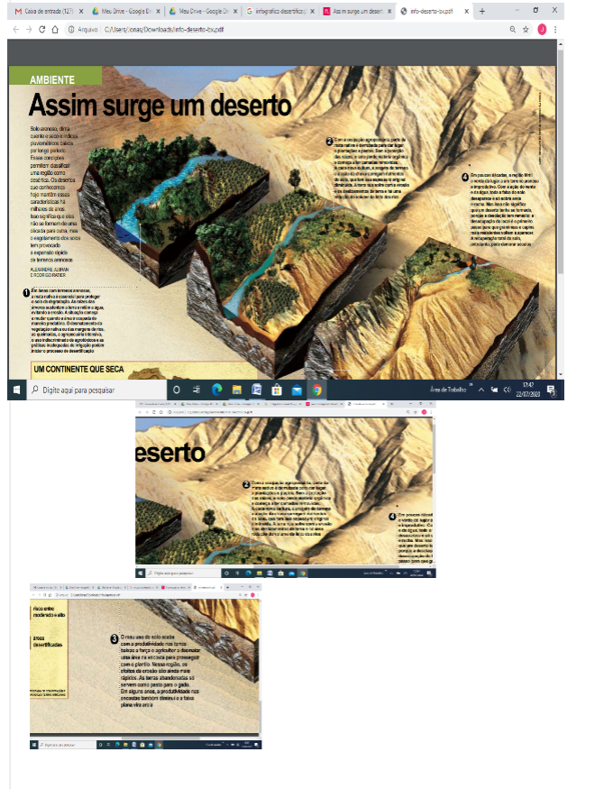

Capítulo 5: Acidentes Geográficos e a Ação Humana
Questão: Como a presença da humanidade modifica a paisagem?
Contexto – Indústria Química e a Busca pelo Equilíbrio AmbientalA indústria química tem contribuído para a preservação do meio ambiente por meio da diminuição dos impactos ambientais e do aumento de eficiência em seus produtos e processos. No Brasil, as empresas associadas à Associação Brasileira da Indústria Química (Abiquim), adotam o Programa de Atuação Responsável® como código de ética industrial. Pelo programa, estão previstas avaliações ambientais constantes e a prática da melhoria contínua. “A indústria química tem investido em busca de eficiência ambiental em seus processos e produtos“, afirma Fernando Figueiredo, presidente-executivo da Abiquim. Os indicadores ambientais estão disponíveis em http://www.abiquim.org.br/atuacaoresponsavel/ .
Acidentes GeográficosAcidentes geográficos são modificações no relevo terrestre e podem ser classificados em duas categorias: acidentes geográficos naturais, como lagos, rios, montanhas, vales, serras, etc; e acidentes geográficos artificiais, como casas, cidades, pontes, etc.
Os acidentes geográficos na maioria das vezes são utilizados como ponto de referência para demarcar fronteiras, como os Montes Urais, acidente geográfico que delimita a fronteira entre a Ásia e a Europa; ou o obelisco em Foz do Iguaçu, um acidente geográfico artificial que determina a fronteira entre Brasil, Argentina e Paraguai.
As atividades humanas e os impactos ambientais Os impactos ambientais foram aumentando conforme o crescimento da população e o desenvolvimento tecnológico. A agricultura foi a primeira atividade sedentária do homem. Com a necessidade de terras cultiváveis, ampliaram-se os impactos ambientais (desmatamento, queima de lenha, poluição do solo, do ar e da água). A destruição da natureza Acelerando a erosão dos solos: É a perda da camada superficial da litosfera, rica em matéria orgânica, onde existe vida microbiana que permite o desenvolvimento da vida vegetal. Entre as várias situações em que o homem provoca ou agrava a erosão dos solos, podemos destacar:
- Os desmatamentos desordenados;
- As queimadas;
- A desertificação;
- A prática da agricultura;
- Os deslizamentos provocados por abertura de estradas e construções em geral.

A desertificação
São as áreas que vão ficando desértica, ou mesmo a expansão dos desertos já existentes. A ONU define a desertificação como a “degradação das terras nas zonas áridas, semi-áridas e subúmidas secas, resultantes de diversos fatores, como a atividade climática e as atividades humanas”. Uma Convenção Internacional sobre a Desertificação e Seca, que conta com a participação de 160 países, sendo um deles o Brasil, instituiu-se no dia 17 de julho o Dia Nacional ao Combate de desertificação. A desertificação ocorre em 100 países, apenas em alguns ecossistemas (clima árido, semi-árido e subúmido seco), as terras ocupadas por este ecossistema abrigam mais de um sexto da população mundial e países com indicadores sociais semelhantes: todos têm um nível de renda baixo, baixo padrão tecnológico, baixo nível de escolaridade e consumo de calorias abaixo da média recomendada. Algumas informações sobre a desertificação: CAUSAS: - Uso intensivo do solo para a agricultura; - Fragilidade do ecossistema; - Desmatamentos; - Pecuária extensiva; - Técnicas não apropriadas de irrigação e cultivo. IMPLICAÇÕES: - Problemas sociais: fome, desnutrição, analfabetismo, diminuição da renda e do consumo; - Migração dos habitantes de áreas secas: pobreza urbana, desestruturação familiar, desemprego; - Destruição da biodiversidade; - Erosão dos solos e formação de areia; - Redução dos recursos hídricos e das terras cultiváveis.
 O que aprendi?Nesse capítulo você aprendeu que as florestas tropicais e equatoriais guardam em seu interior uma grande parcela da biodiversidade da Terra. Também aprendeu que a ação humana, também chamada de ação antrópica, é responsável por modificar as paisagens, provocando muitas vezes, prejuízos para o meio ambiente. A indústria tem buscado formas de reverter o uso indiscriminado dos recursos naturais e desenvolvimento de tecnologias limpas.